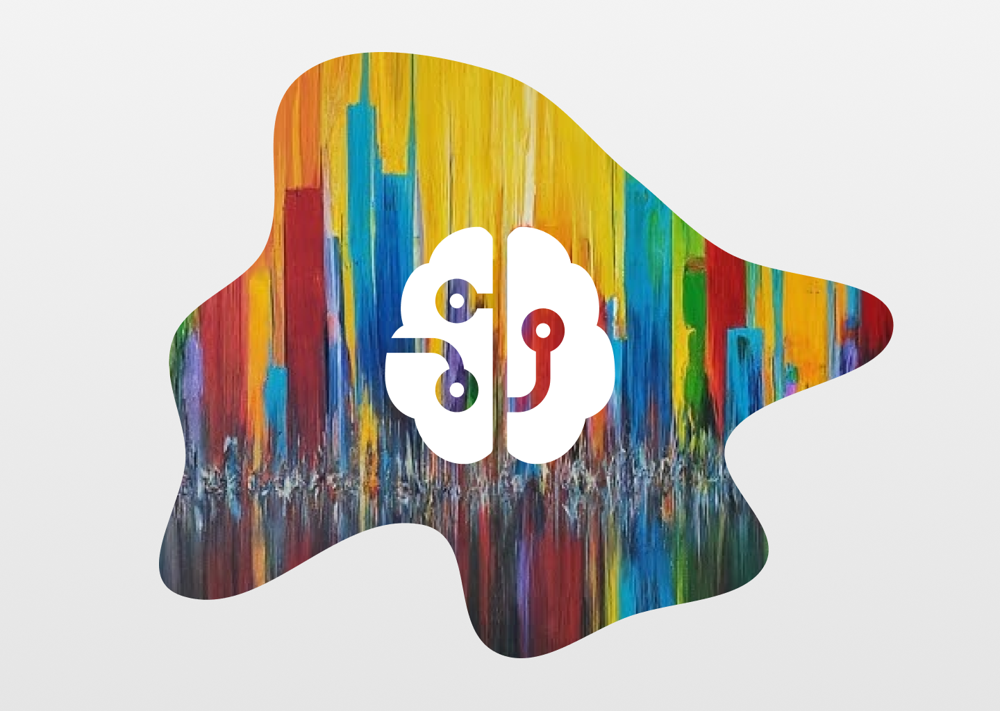

The path to unlocking visual intelligence
The internet is full of photos, both of friends and family and of things that make us say "huh?" at first glance. It's often the latter that captures our attention the most, as seen in the intriguing photos that Michael Gonchar from the New York Times compiled for his readers. These photos help us to develop our visual thinking skills and to better understand the context of the photo. They challenge our expectations and force us to look at the world in a new way. Gonchar's collection of intriguing photos is a great example of this. His photos make us stop and think about what we're seeing, and they help us to see the world in a new light.
After reading Gonchar's article, I looked for websites that use images and interactions to inspire visual thinking. I found Search Through Time, a Google website that shows how Google Search has evolved to help us find information online. The site uses a timeline format with interesting images and trivia about Google's achievements. I found the interaction to be engaging: the timeline was easy to use, the trivia was fascinating, and the images helped to highlight Google's milestones over the years. Google did a great job of weaving together the storytelling, which made the experience memorable.
Reading Gonchar's article and interacting with Search Through Time made me wish I had a more visual memory. My childhood memories are hazy and I'm not sure if I'm remembering them correctly. But Gonchar made it clear that visual thinking goes a long way in helping me recall specific experiences. By exercising this type of thought process, I'll be able to better articulate thoughts that had been unspecified but present in my mind.
Source: Search Through Time